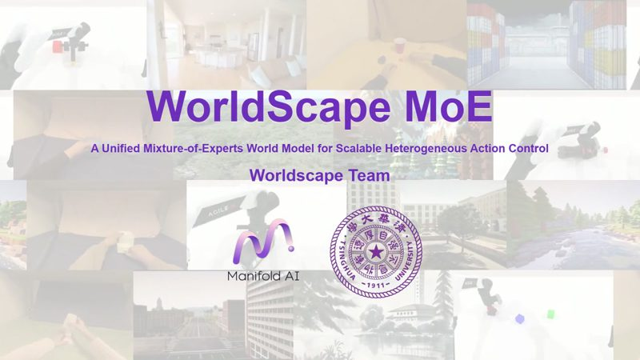

NeurIPS 2026
CCF-A
Worldscape-MoE: A Unified Mixture-of-Experts World Model for Scalable Heterogeneous Action Control
面向异源动作控制的 MoE 世界模型：共享专家学习跨控制的世界动态，专属专家吸收不同控制接口，并支持向新控制方式扩展。
A mixture-of-experts world model for heterogeneous action control. Shared experts learn dynamics that transfer across controls, while control-specific experts absorb each interface and extend to new ones.